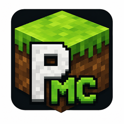

01 / ABOUT ME!
About me
My name is Debarshi(deb).S, short Deb 15yo kid, working on AI infrastructure, custom computing, NPU/TPU designing and active contributor of PS4linux. And founder & project manager of PluginMC.
HELLO, WORLD 👋
don't chase trends, tear systems apart to understand them..
 PS2Linux.PS3linux.PS4linux
PS2Linux.PS3linux.PS4linux
01 / ABOUT ME!
My name is Debarshi(deb).S, short Deb 15yo kid, working on AI infrastructure, custom computing, NPU/TPU designing and active contributor of PS4linux. And founder & project manager of PluginMC.
03 / CURRENT RESEARCH
Loading selected research articles...
02 / WHAT I'VE DONE
latest updates of my work, wut I've done all along the way
Loading latest articles...
04 / EXPERIENCE

PluginMC · Self-employed
Jul 2026 – Present · Remote
Founded PluginMC, a Minecraft plugin development agency that helps server owners turn unique gameplay ideas into production-ready systems. We manage projects from concept to delivery, with a focus on custom gameplay, progression systems, performance and reliable live-server experiences.


05 / HERE IS WHAT I WANT
Well contribute in research level on tech companys where money talks on AI compute, hardware, AI infrastructure, software ecosystem, custom silicon,
on the otherhands do research on new projects like on Quantum research or custom computing side me I wut I think about Quantum research it's more like a playground for me pushing it's limit new designs.
Research on Bio-computing more on neuroscience like Engram research focus on Memory & Cognition Systems and interconnecting electronics and biology.
Then having my own companies based on these works colab with other tech giants,
In business and networking side Make lot of money, deal and network with big people take to them.
and other times playing games and do hacking consoles contribute linux other project like wut I'm doin right now PS4linux Gladius PS3 RSX research PS2 or other hardware or opensource project work maybe in future will see me on PS6,PS7linux development
and its my another way to think and reshape my ideas